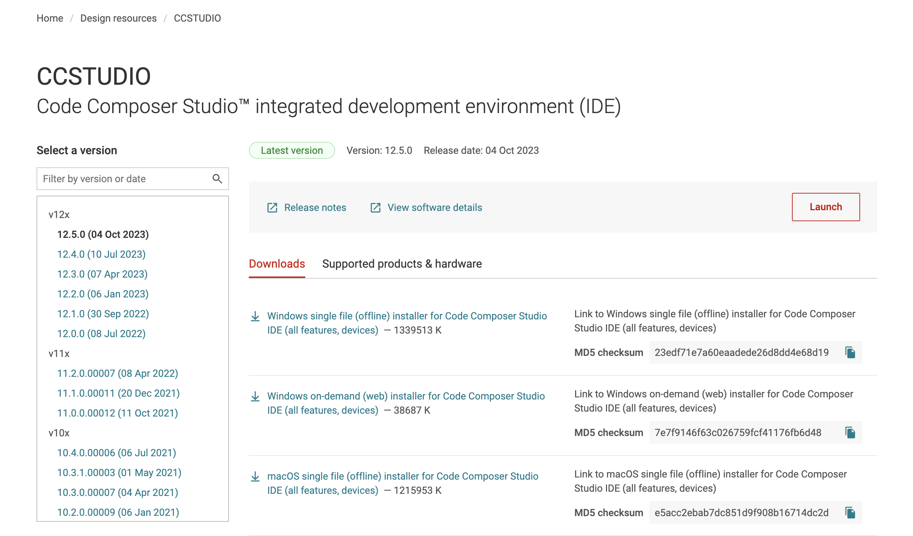
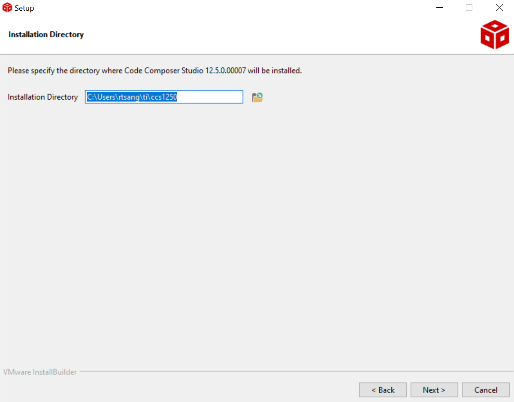
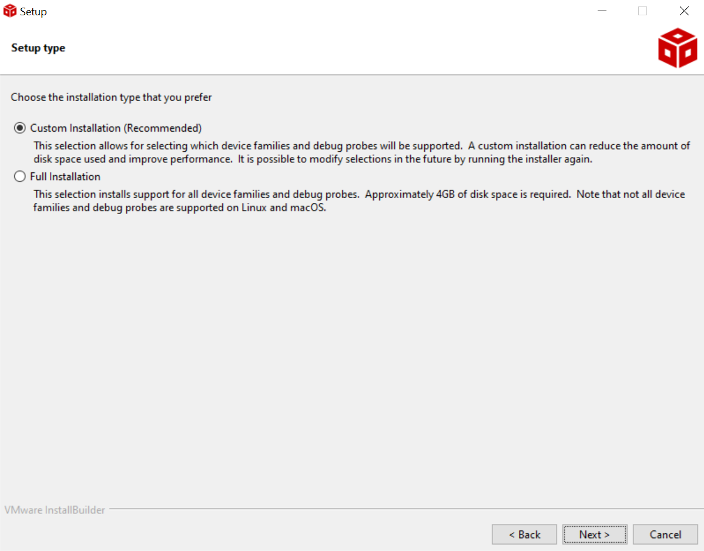
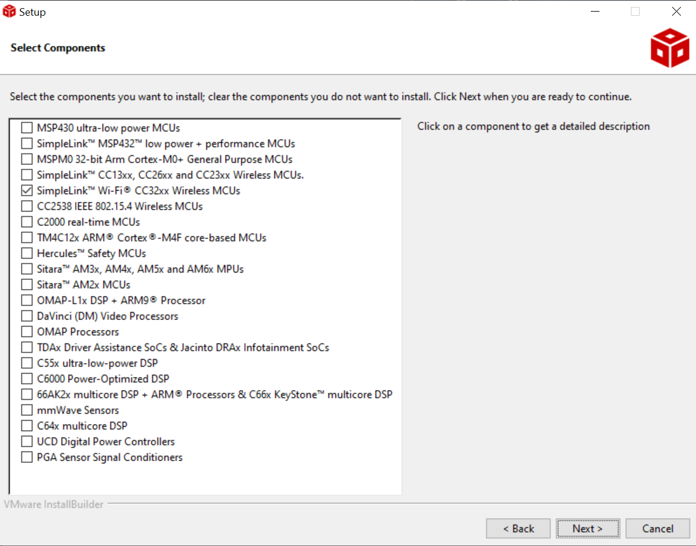
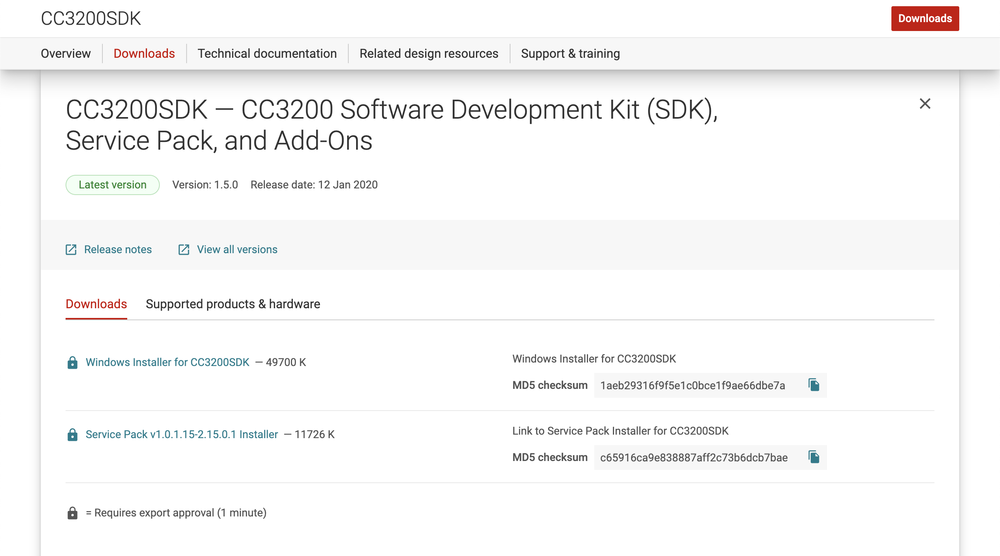
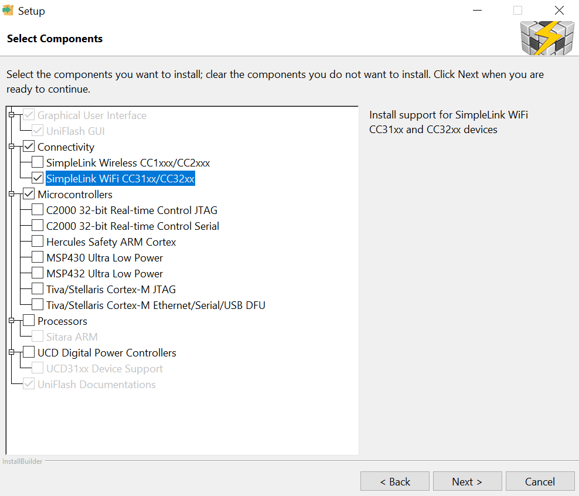

EEC172 Software Setup
Requirements
The following software must be installed on your own computer to use it for project development. The software is already installed on the lab computers. OS-specific walkthroughs can be found further below.
Note that to download some of the TI software, you will need to set up a TI account. Establish your own account to download the software instead of trying to get it in some other way.
Code Composer Studio (CSS) IDE [latest]
https://www.ti.com/tool/CCSTUDIO
Download and install the latest version of CCS. You will have access to the full-featured version (not code-size or time limited) when using the CC3200 LaunchPad.
CC3200 Software Development Kit [v1.5.0] and CC3200SDK-ServicePack [v1.0.1.15-2.15.0.1]
(Windows-Only) https://www.ti.com/tool/cc3200sdk
TI SYSCONFIG Tool [latest]
CCS UniFlash [3.4.1] or cc3200tool [latest]
https://www.ti.com/tool/download/UNIFLASH/3.4.1 https://github.com/toniebox-reverse-engineering/cc3200tool
PuTTY, TeraTerm, or other Terminal emulator (Windows-Only) (we will use the
cc3200tool termfor mac)You will use a terminal emulator program for serial input and output to you CC3200. You can use any terminal emulator program that you prefer. The lab machines will have PuTTY (available at http://www.putty.org/) and Tera Term (available from https://ttssh2.osdn.jp/index.html.en).
Saleae Logic 2 (Optional)
https://www.saleae.com/downloads/
This is software to use the Saleae Logic Analyzer. Between you and your lab partner, only one of you will need this software if you wish to use the logic analyzer for digital signal debugging, as you will be sharing one logic analyzer anyways.
Windows 10/11
Installing CCS
Visit the CCS Download Page. Download the
Windows on-demand (online) installer for Code Composer Studio IDE (all features, devices)for v12.5.0 by clicking on the link. CCS Download PageRight-Click on the downloaded archive and select Extract All. Then find the setup application
ccs_setup_12.5.0.x. Right-Click on it and select Run as Administrator.(License Agreement) Continue through the installer, and when prompted, accept the License Agreement.
CCS License Agreement(Install Directory) Choose a location to install CCS. It should be somewhere on your
C:\drive and easy to remember, as you will install the other tools to the same directory. (We recommendC:\Users\<user>\ti\) Select CCS Install Directory(Installation Type) Select
Custom Installation Installation Type(Select Components) Check the box corresponding to
SimpleLink™* Wi-Fi® CC32xx Wireless MCUs. You will not need any other components for this course. Select Components(Install Debug Probes) We will not be using any of the other debug probes beyond the default. Leave the boxes unchecked and continue.
(Finish Installation) Continue through the rest of the installer until the process is complete.
Installing CC3200 Support Files
Visit the SDK Download Page. Download most recent version of the
Windows Installer for CC3200SDKand theService Pack Installer. Both of these require a TI Account. When prompted, indicate "Civil Use", agree to the License Agreement, and continue. Select ComponentsRun both of the downloaded installers. We recommend installing them to the same location as CCS. Continue through the windows until finished.
Installing TI SysConfig
Visit the SysConfig Download Page. Download the
Windows Installer for SysConfig.Run the
sysconfig-x.x.x_x-setupapplication. Continue through all the windows. When prompted, select the install directory, then continue until installation complete.
Installing UniFlash v3.4.1
Note: It must be version 3.4.1 or earlier, as no later versions are compatible with the CC3200
Visit the UniFlash Download Page. Download the
Windows Installer for UniFlash.Right-Click on the downloaded archive and select Extract All. Then find the setup application
uniflash_setup_3.4.1.x. Right-Click on it and select Run as Administrator.(Select Components) Agree to any license agreements, and continue through the installer. Choose your install directory, and when you reach the "Select Components" page, choose
Connectivity -> SimpleLink WiFi CC31xx/CC32xx, as shown below. Then continue through the rest of the installer. If prompted to install FTDI drivers, click Yes. Select Components
Installing PuTTY
We recommend PuTTY over TeraTerm, though it doesn't matter too much. To install PuTTY, if you have Chocolatey, you can run:
choco install puttyfrom an Administrator shell. Otherwise, you can install from the Microsoft Store, or you can install manually.
(Manual Install) Visit the PuTTY Download Page and download the Installer for your machine's architecture. Then run it and follow the prompts. (You can use defaults)
Installing Saleae Logic 2
- Follow the Installation instructions on Saleae's Support website, found here
MacOS Catalina or Later
(Tested on Sonoma, Apple M1 Pro)
The labs can be done on macOS, but will require extensive use of the Terminal, as cc3200tool is a python command line tool. We have had to modify it to some extent, so for things to work properly, you will need to setup a conda environment. If you are not familiar with navigating the Terminal, you can refer to this crash course on the command line as well as this neat cheat sheet of common commands.
We will go through the full installation process using Homebrew, as this will greatly ease the installation process.
Install Homebrew
Homebrew is a package manager for macOS, similar to Chocolatey on Windows and apt in Ubuntu. It can be used to install and uninstall most libraries, tools, and applications cleanly and easily. (If you already have Homebrew installed, skip to step 3).
Open
/Applications/Utilities/Terminal.appCopy and paste (without the
$) the following into the terminal prompt:$ /bin/bash -c "$(curl -fsSL https://raw.githubusercontent.com/Homebrew/install/HEAD/install.sh)"Agree as necessary to continue the installation until the script finishes. (Allow homebrew to be install to the default path prefixes)
After homebrew finishes installing, close and reopen your Terminal window. Then add the
ucd-eec172tap:$ brew tap ucd-eec172/ucd-eec172
Install All Dependencies
conda/mamba.$ brew install --cask mambaforge $ conda init "$(basename "${SHELL}")"Close and reopen your Terminal after these commands complete.
Code Composer Studio and TI SysConfig. This requires that you have added
ucd-eec172/ucd-eec172as a Tap. Installs both to /Applications/TI/$ brew install --cask ucd-eec172-ccs $ brew install --cask ucd-eec172-sysconfigCC3200 Support Files. Install sdk and supportpack to
/Applications/TI/lib.$ brew install --cask ucd-eec172-cc3200-supportcc3200tool. This one is a bit more involved. In Terminal, navigate to your desired install directory, and run the following commands.
# uncomment and run if you do not have git # brew install git $ git clone https://github.com/rchtsang/cc3200tool.git $ cd cc3200tool $ mamba env create -n cc3200 -f environment.yml $ conda activate cc3200 $ pip install -e . $ cc3200tool -h # conda deactivate # to deactivate the virtual environmentIf the
cc3200toolis installed successfully, you should see a help string get printed to the output.Saleae Logic 2.
$ brew install --cask saleae-logicNote any caveats and follow any additional instructions if brew prompts you.